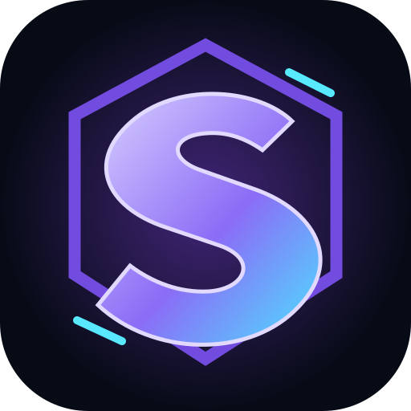

SHADOWSHIFT
40 floors. Four math guardians. One survivor.
Play free in your browser or add the game to your home screen.
iPhone / iPad (Safari)
- Open Shadowshift in Safari.
- Tap Share (the square with an up arrow).
- Choose Add to Home Screen (you may need to scroll).
- Tap Add. Launch Shadowshift from its new icon.
Android (Chrome)
- Open Shadowshift in Chrome.
- Tap the ⋮ menu.
- Select Install app or Add to Home screen.
- Confirm to add the Shadowshift icon.
No app store or account required. Progress is saved in this browser; use the in-game export option to back it up.